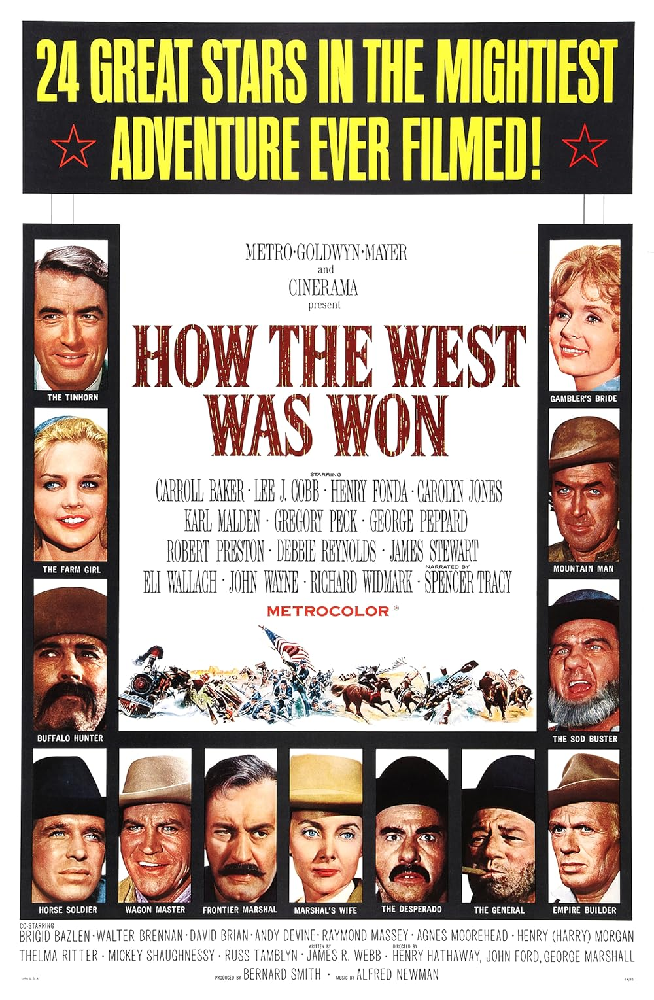

How the West Was Won
36th Academy Awards
(Oscars 1964)
8 Nominations, 3 Awards
| Nominations | ||
|---|---|---|
| Category | Nominees | Result |
| Best Picture | Bernard Smith | Nominated |
| Writing (Story and Screenplay--written directly for the screen) | James R. Webb | Won |
| Cinematography (Color) | Charles Lang, Jr., Joseph LaShelle, Milton Krasner, and William H. Daniels | Nominated |
| Film Editing | Harold F. Kress | Won |
| Art Direction (Color) | Addison Hehr, Don Greenwood, Jr., George W. Davis, Henry Grace, Jack Mills, and William Ferrari | Nominated |
| Costume Design (Color) | Walter Plunkett | Nominated |
| Sound | Franklin E. Milton | Won |
| Music (Music Score--substantially original) | Alfred Newman and Ken Darby | Nominated |